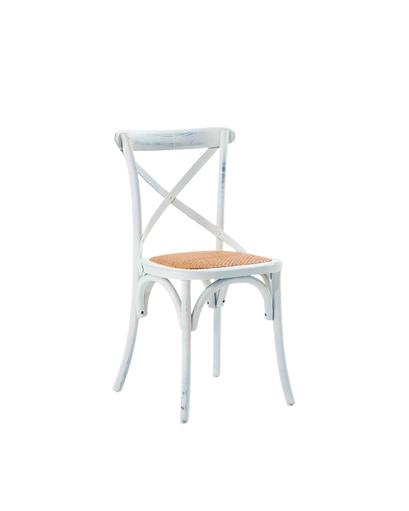

Sillas plegables de plástico

Sillas Imitacion Madera:
Estilo y Uso: Esta silla blanca presenta un diseño elegante y clásico, ideal para eventos formales e informales. Aunque no es plegable como las sillas de plástico mencionadas, su estructura ligera y robusta asegura comodidad y durabilidad.
Capacidad: La silla tiene una capacidad para una persona y se puede adquirir individualmente o en conjuntos, según las necesidades específicas de tu evento.
Costo: El costo variará según el proveedor y la cantidad comprada, pero se espera que sea una opción rentable para aquellos que buscan elegancia a un precio accesible.
Características Adicionales: La parte posterior de la silla tiene un diseño ornamental con varillas verticales que añaden un toque de sofisticación. Las cuatro patas sólidas proporcionan estabilidad, y el asiento plano parece ser cómodo para largas duraciones.
Consideraciones: Es importante verificar las dimensiones y la capacidad de peso de esta silla para garantizar que se adapte perfectamente a tus requerimientos. Aunque su diseño compacto puede facilitar el almacenamiento, no ofrece la misma facilidad de transporte que las sillas plegables.